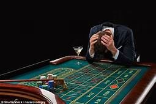

<template>
  <div class="MainContainer">
    <div class="TitleImg center">
      
    </div>
    <div class="single-wide">
      <h1>VDF Gambling Strategies </h1>
      <p>Lets get serious and start thinking gaming strategy. Along with <a href="#stats101">understanding the mathematics of the casino games </a>is creating a gambling strategy This section includes great tips for basic to advanced gambling strategies. Excellent Tips for <a href="#/blackjackStrat">Blackjack Strategy,</a> <a href="#/crapsStrat">Craps Strategy,</a> <a href="#/videoPokerStrat">Video Poker Strategy</a> and <a href="#/rouletteStrat">Roulette Strategy.</a> Make sure to know the games your playing first by checking out our <a href="#/gambling101">gambing 101 section.</a> take some time and learn the right way to play.  </p>
      <h3>Playing the right games</h3>
      
      <p>  Players can find many games to gamble on at an online casino, but some games are better than others. Some casino gambling games are easier to win than others, because the house edge is lower. Games like blackjack and video poker are games of skill where strategy counts, while other games are pure games of chance. </p>
      <p><b>Picking the right casino game helps a player stretch their bankroll, </b>increasing one’s excitement and enjoyment while betting. Below is the house edge of the most popular casino games. The lowest house edge equals the right bet to choose. Many rules affect blackjack odds, so we use standard Blackjack where blackjack pays 3:2, doubling is allowed, the dealer stands on soft 17, and splitting to four hands is allowed. </p>
      <ul>
        <li>Single-Deck Blackjack: 0.50% </li>
        <li>2-Deck Blackjack: 0.78% </li>
        <li>6-Deck Blackjack: 0.91% </li>
        <li>8-Deck Blackjack: 0.97%</li>
        <li>Craps: Come/Pass Line Bet: 1.41% </li>
        <li>Craps: Don’t Come/Don’t Pass Bet: 1.36%  </li>
        <li>Single-Zero Roulette: 2.70% </li>
        <li>Double-Zero Roulette: 5.26% </li>
      </ul>
      <h4>"A dollar picked up in the road is more satisfaction to us than the 99 which we had to work for, and the money won at Faro or in the stock market snuggles into our hearts in the same way." </h4>
      <h5>- Mark Twain (1835-1910)  </h5>
      <h3>How to Win at Casino Games </h3>
      <p>Using time-tested betting strategies is the best way to win at casino games. knowing the mathematics of the game and basic game play is critical to using betting strategies. For instance, basic strategy in blackjack provides the player with the optimal play in each scenario. In other games, no strategy exists besides finding the best bets in the game and using a winning betting system to manage your bankroll. Avoid the trendy betting systems like the Martingale, but instead use bankroll management to assure you limit losses when the game doesn’t go your way and lock in winnings when you’re on a winning streak.  </p>
      <h3>Gambling Tips to Win </h3>
      <p>Do your research, because there are online casino tips for winning that you can follow to boost your chances of winning and lower your risk of ruin. Casinos have a house edge in most games, which you should consider the price of entertainment. The great thing about gambling is you have a chance to win back the price of admission and then some. The casino winning tips below should give you a start on your research.</p>
      <p><b>Use Rewards and Bonuses:</b> Never turn down comps of any kind. Always accept bonus offers, player rewards, and other promotions. Nothing lowers the house edge more than free money, so never play without using sliding your slots card into the machine or without inputting a coupon code you have. </p>
      <p><b>Choose a Win Goal:  </b>“Win goal” is a money management term. It means you set an amount at which you end your gaming session. If you’re win goal is $500 and you win $500, you immediately quit playing. If you’ve won $499, then it’s alright to keep playing. Setting a win goal helps you lock in winnings. </p>
      <p><b>Set a Loss Limit: </b>“Loss limit” is another bankroll management term and is the opposite of a win goal. It means you set a minimum amount at which you stop playing. Loss limits keep a gambler from going on tilt, while assuring responsible play. Your loss limit might mean you either end the session or take a few minutes break before using more of your bankroll. </p>
      <p><b>Avoid Uninformed Betting: </b>Learn the correct strategy for any game prior to playing the games.  The house advantage over the player is much higher against an uniformed gambler.  The house will always have the edge in casino gambling, but with correct you play, you can minimize that advantage to less than 2%.  If you combine correct strategy with matchplay and free play coupons, you can create an advantage over the casino for those wagers! </p>
      <p><b>Folding in Poker Games: </b>Mastering the art of folding is important in games like Texas Hold’em, Three-Card Poker, and Let It Ride. Poker players tend to be brave souls. It’s natural to make a call or raise the bet, but some of the best hands you’ll play are those in which you choose to fold. In online poker games, bluffing is marginal, so learning when you should call or not is key. </p>
      <h3>What Is a Strategy? </h3>
      <p>A <a href="#/stats101">gambling strategy</a> is a course of action you decide on in advance. For example, a gambling strategy might be to learn how to play blackjack using perfect strategy by memorizing a basic strategy chart, and then testing yourself with an online basic strategy tutor. The second step in that strategy might be to learn how to count cards by reading a book on the subject, picking a methodology, and practicing at your kitchen table until you can count down an entire deck in 60 seconds or less. The next step in that strategy might be to set aside a bankroll large enough to withstand the effects of standard deviation and avoid going broke. Your final step would be to embark on your new career (or avocation) as a card counter. </p>
      <p>But that’s not the only valid <a href="#/stats101">gambling strategy</a>. Your strategy might be to set aside $50 out of every paycheck to play the slots with. You make a single trip to a casino once a month with a bankroll of approximately $200. If you lose the $200, you quit for the session, and you return the following month to try it again. If you win $200 or more, you quit winners for the session, have some fun with your winnings, and return the next month with your new $200 bankroll that you’ve accumulated. </p>
      <p>The first strategy (the blackjack strategy) is a positive expectation strategy, assuming you can develop the skills involved, and also assuming that you have the self-discipline to follow it. A positive expectation strategy is one which can expect to win money over a long enough period of time. In the short term, anything can happen, but in the long run, gamblers with a positive expectation strategy expect to win more than they lose. </p>
      <p>The second strategy (the slot machine strategy) is a negative expectation strategy. Slot machines are a negative expectation game, and even reasonable money management tactics like the one outlined above won’t overcome the game’s built in mathematical disadvantage over the long run.  Is one strategy better than the other? </p>
      <p>That depends on your goals as a gambler. If your goal is to earn a living gambling, then you’d want to stick with some kind of strategy and game where you can get a positive expectation. Blackjack, poker, video poker, and sports betting are all gambling games where you can get a positive expectation IF you acquire the necessary skillset. </p>
      <p>On the other hand, if your goal is to entertain yourself and occasionally celebrate a big win, and you don’t mind spending the money for that entertainment, the slot machine strategy above would work fine for you. Almost all other gambling and casino games besides the ones I mentioned in the last paragraph are negative expectation games, so you cannot hope to get an edge when playing them. Games like roulette, slot machines, craps, and keno have a negative expectation, and anyone who plays them long enough will experience more losses than wins. </p>
      <h3>Best Gambling Strategies </h3>
      <p>Those are single tips for the most popular games, but readers might want more details. In the section below, we go over the best strategies for each popular game, including video slots and Texas Hold’em. Keep in mind that casino strategies which work in brick-and-mortar gaming establishments do not always apply to online and mobile casinos. Handy tips exist for each game, so each best strategy tip will help you walk out of the casino with a bigger bankroll than otherwise. </p>
      <h3>Best Slots Strategy </h3>
      <p>As a general rule, <a href="https://www.casinogamblingstrategy.org/slots/">slot machines have no strategy</a> element. Winning or losing is purely a matter of chance. Skill-based slots are legal in Las Vegas and Atlantic City now — and should become mainstream in a few years. Also, some progressive jackpots go so high that playing becomes a positive expectation game, though winning on a progressive slot machine is still a matter of pure chance. Avoid the zigzag method and other proposed slots systems, because slot machines have no betting system proven to win. </p>
      <h3>Best Blackjack Strategy </h3>
      <p>It is possible to get a slight mathematical edge over the casino by counting cards at Blackjack. A variety of card counting methods exist. Some are easy to learn and others are complicated, for the average player, keeping an accurate count is very difficult to do.  The easiest way to gain an advantage over the casino is to play a single hand of Blackjack with a matchplay coupon.  For example:  if you wager $25 with a $25 matchplay coupon at the BJ table, the house maintains it 51%-49% advantage, but if you win, you collect $50 on a $25 wager, giving the player an enormous 49% advantage over the house on that wager.  We recommend always wagering with a coupon and/or free play that gives the player the house advantage. This is simply the best mathematical way to gamble.  If you are a low roller but wish to play some blackjack, then we suggest you consider using our winning hand progressive strategy, which tries to minimize the loss while going for a big win. Learn more about that strategy <a href="#/blackjackStrat">here.</a></p>
    </div>
  </div>
</template>
